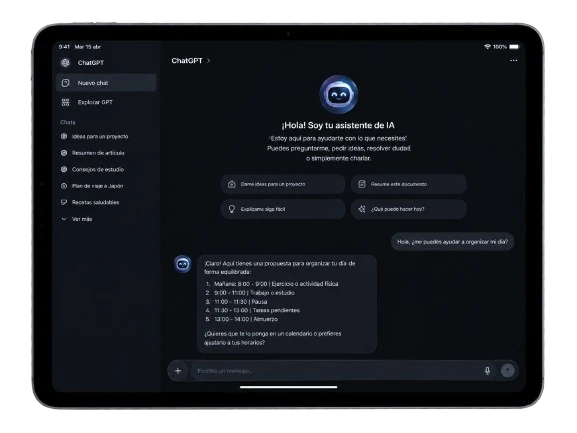

Servicio
Agentes de IA
Chatbots y agentes de IA para atención, consultas, reservas y derivación, incluidos agentes de voz.
Qué incluye
- Casos de uso definidos contigo
- Entrenamiento con tu información real
- Integración en web y WhatsApp
- Reglas de derivación a una persona
- Pruebas con preguntas reales
Para quién es
Negocios que reciben las mismas preguntas todo el día y quieren responder al momento sin tener a alguien pendiente del chat.
Antes de decidir
Guías que hemos escrito sobre este tema, útiles aunque no trabajes con nosotros:

Si tu negocio recibe cada día las mismas preguntas por WhatsApp, por la web o por teléfono (horarios, precios, si queda hueco el jueves), una parte de esa atención se puede delegar en un asistente de IA. La otra parte, la que requiere criterio, debe seguir llegando a una persona. Nuestro trabajo es separar bien las dos.
Qué problema resuelve
Las consultas repetidas interrumpen el trabajo, y las que llegan fuera de horario o cuando el equipo está ocupado a menudo se quedan sin respuesta. Un agente de IA contesta al momento con tu información, recoge los datos de quien escribe o llama y pasa el caso al equipo cuando no debe resolverlo solo.
Tres tipos de asistente
| Tipo | Qué hace | Riesgo principal |
|---|---|---|
| Chatbot de respuestas | Contesta preguntas a partir de la información que le das, en la web o en WhatsApp | Responder algo que no está en esa información |
| Agente con acciones | Además consulta o modifica cosas: la agenda, un pedido, un CRM | Hacer una acción equivocada, como duplicar una cita |
| Agente de voz | Atiende llamadas: entiende lo que dice la persona, responde con voz sintética y toma nota o pasa la llamada | Entender mal por ruido o acento, y que la conversación resulte lenta |
Nuestro consejo habitual es empezar por un asistente de respuestas bien hecho y añadir acciones o voz cuando ya sabes qué preguntan tus clientes de verdad. Lo explicamos en la guía Chatbot o agente de IA para atender clientes.
Cómo funciona
- Base de conocimiento: el agente responde a partir de tus documentos (servicios, precios, políticas, preguntas frecuentes), no de lo que el modelo “sepa” de internet.
- Reglas: lo que nunca debe decir, cuándo derivar a una persona y a quién, y el tono de las respuestas.
- Canales: la web, WhatsApp Business o el teléfono, según dónde te escriben o te llaman tus clientes.
- Modelo de IA: usamos modelos de OpenAI, Anthropic u otros según el idioma, el coste y el tipo de tarea.
- Revisión: las conversaciones se revisan periódicamente para corregir respuestas y completar la información.
Alcance: qué entra y qué no
Incluye: definir contigo los casos de uso, preparar la información con la que trabaja, integrarlo en web y WhatsApp, configurar las reglas de derivación y probarlo con preguntas reales antes de publicarlo. El plazo habitual es de 2 a 4 semanas.
No incluye: asesoramiento médico, legal o financiero automatizado. En esos ámbitos el agente puede informar y derivar, pero no decidir.
A tener en cuenta: los proveedores de modelos de IA y de telefonía o mensajería cobran según el uso. Te explicamos de qué depende ese coste antes de empezar.
Qué necesitamos de ti
- Las preguntas más frecuentes con su respuesta exacta. Si no las tienes escritas, salen de tus últimos mensajes de WhatsApp y correo.
- Servicios, precios y políticas actualizados: cancelaciones, señal, devoluciones.
- Lo que no debe decir nunca y los casos que siempre debe pasar a una persona.
- Acceso a los canales: cuenta de WhatsApp Business, número de teléfono o la web donde se instalará.
Cómo lo probamos
Antes de publicarlo lo sometemos a una batería de preguntas reales con la respuesta esperada al lado: preguntas escritas de varias formas y con faltas, preguntas cuya respuesta no está en la información (debe reconocer que no lo sabe), intentos de sacarle un descuento y un cliente enfadado. Si falla, casi siempre se corrige en la información o en las reglas, y se vuelve a pasar la batería completa.
Cómo se mide si funciona
Qué porcentaje de consultas resuelve sin ayuda, cuántas deriva y por qué motivo, cuántas respuestas hubo que corregir en la revisión y cuánto tarda el cliente en recibir respuesta. Si las derivaciones no bajan con el tiempo, falta información o sobran reglas.
Límites y obligaciones
- Un modelo de IA puede equivocarse. Las reglas, las pruebas y la revisión reducen ese riesgo, pero no lo eliminan; por eso siempre hay una vía para hablar con una persona.
- El Reglamento europeo de IA obliga a informar a las personas de que están hablando con un sistema de IA. El agente lo dice al empezar la conversación.
- Las conversaciones contienen datos personales: hay que decidir dónde se guardan, durante cuánto tiempo e informarlo en tu política de privacidad.
Proceso
Cómo lo hacemos.
- 01
Casos de uso
Revisamos qué te preguntan, por qué canal y a qué horas, y decidimos qué debe resolver el agente y qué debe pasar a una persona.
- 02
Información y reglas
Ordenamos tu información, escribimos las reglas de derivación y lo que nunca debe decir. Plazo y presupuesto cerrados por escrito.
- 03
Montaje y pruebas
Lo integramos en tus canales y lo probamos con una batería de preguntas reales antes de que lo vea ningún cliente.
- 04
Publicación y revisión
Se publica, se revisan las conversaciones y se corrige la información con lo que el uso real enseñe.
Preguntas frecuentes
Dudas habituales de este servicio.
¿El agente puede inventarse respuestas?
Se entrena con tu documentación y se le marcan límites: lo que no sabe, lo deriva a una persona en vez de improvisar. Aun así, se revisan las conversaciones para detectar errores.
¿Puede hacer reservas?
Sí, cuando la herramienta de reservas permite integrarse. Si no, recoge los datos y avisa a tu equipo.
¿También puede atender llamadas?
Sí, con un agente de voz que responde al teléfono, contesta lo habitual y toma nota o pasa la llamada a una persona. Recomendamos empezar por texto si aún no tienes claras las preguntas frecuentes.
¿Sabrá el cliente que habla con una IA?
Sí. Es una obligación del Reglamento europeo de IA y, además, evita malentendidos. El agente lo indica al inicio.
¿De qué depende el coste?
De los canales (web, WhatsApp, teléfono), de si solo responde o también hace acciones, de las integraciones y del volumen de conversaciones, que marca lo que cobran los proveedores de IA y mensajería.
Cuéntanos
tu proyecto.
Nos escribes, lo miramos y te decimos qué haríamos y cuánto costaría. Sin compromiso.